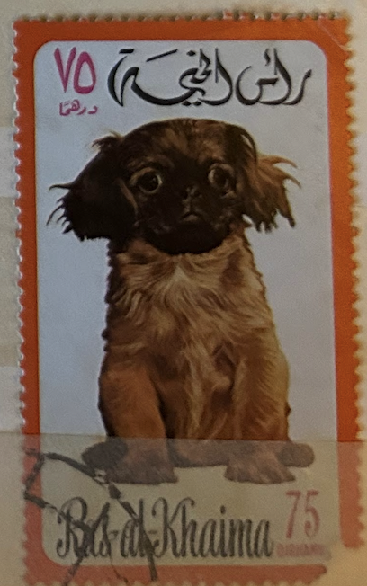
| SOURCE | TITLE| IMAGE MATCH | click to source page |
| Todocolección | postal perrito chato - Buy Antique postcards of animals on todocoleccion | |
| eBay | Postcard Dog Pekingese Puppies | eBay | |
| Invaluable.com | Sold at Auction: Walter Leighton Clark, Walter Clark (1859 - 1935), The Pooch, oil on canvas, signed lower right Walter Clark, relined, in Newcomb-Macklin frame, 20" x 16",... | 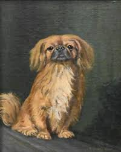 |
| 1stDibs | Tuck And Sons - 8 For Sale on 1stDibs | tuck postcards for sale, raphael tuck & sons postcards value | 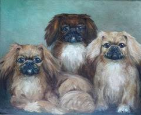 |
| Public Domain Pictures | Dog, Pekingese, Pet Free Stock Photo - Public Domain Pictures | |
| Dr. Wendie Schneider has recently returned from a visit to the American Kennel Club's Museum of the Dog in New York where she was collecting illustrations for an upcoming conference presentation on | 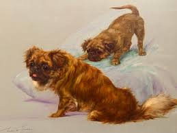 | |
| Christie's | Philip Eustace Stretton (Fl.1884-1919) , Companions | Christie's | 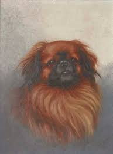 |
| Some people dont appreciate our Youtube videos..🤔. I suppose they would prefer comforting lies over the truth and there certainly is a market for that. When we make a video on any | 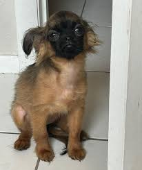 | |
| Etsy | 海の前の砂丘にいるペキニーズ犬の肖像画、C.フィリップス - Etsy 日本 | 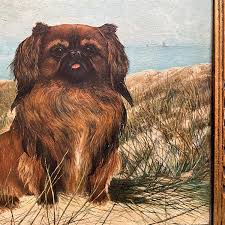 |
| eBay UK | Pekingese Collectables for sale | eBay UK | 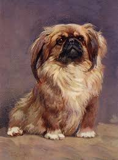 |
| Sally Faires Portraits (@sallyfairesportraits) • Facebook | 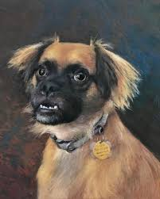 | |
| Todocolección | postal perrito chato - Compra venta en todocoleccion | 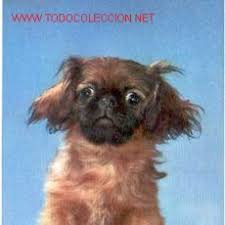 |
| eBay | Pekingese Art | eBay | 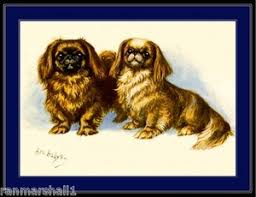 |
| Hamshere Gallery | Category Individual - Hamshere Gallery - Specialists in Canine & Sporting Antiques | 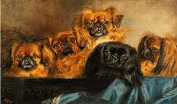 |
| ArtMajeur | Miniature “Pikines”, Painting by Tatjana Cechun | ArtMajeur | 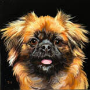 |
| Lost Pekingese Dog in Salisbury, North Carolina | 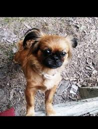 | |
| osons-a-stmalo.com | Cheap cavalier king charles pug mix Cheap Sale Pug X King Charles Cavalier Wagga Wagga PetsForHomes | |
| Invaluable.com | Monica F. Gray Paintings & Artwork for Sale | Monica F. Gray Art Value Price Guide | 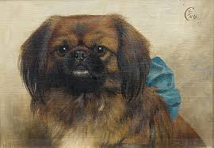 |
| wallector.com | Pekingese Family of Dogs by Filiberto Vitaliano Rossi at wallector.comwallector.com | 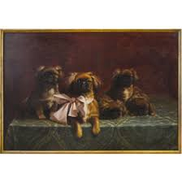 |
| Christie's Auction | C. Fred Sitzler, 20th Century , A Boxer, head study | Christie's | 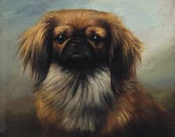 |
| Recommendations for the best Quiet wheel for my hamster please. Originally had a flying saucer which was great but didn't realise it was bad for his spine so got a large one | ||
| Collins Online Dictionary | PEKINGESE definition and meaning | Collins English Dictionary | |
| Please Please Share🙏 We Need Information On Ivys Whereabouts. | ||
| Beautiful photography 😍📸 | 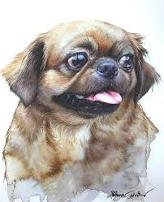 | |
| eBay | DOG-THREE PEKINGESE PUPPIES-#C22609-(DOG-301) | eBay | |
| Artnet | Marino Lenci | Artnet | 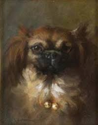 |
| Owassoisms (owassoisms) - 프로필 | Pinterest | 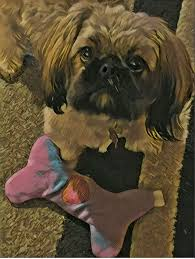 | |
| WorthPoint | Beautiful Pekingese Dog Portraiture by Angie Draper, Koala Toi Tang, Original | #434166493 | 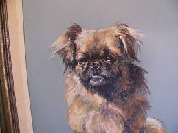 |
| Faire | Wholesale Pekingese Red Sable A House Is Not A Home - Garden Flag for your store - Faire | 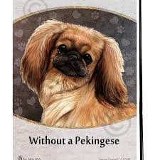 |
| How cute is this 🥰 | ||
| David (@davidsagoodboy) • Instagram photos and videos | 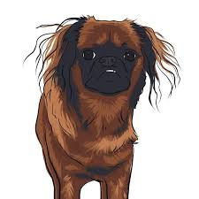 | |
| Alamy | Chihuahua pekinese mixed dog laying on sofa relaxing Stock Photo - Alamy | |
| Blogger | 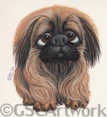 | |
| What're we cooking up tonight there folks?? I'll be easy for ya and take the usual • • • • • #brusselsgriffon #bg #griffon #dog #puppy #puppiesofinsta #dogsofinsta #goodboy #hfxdogs | 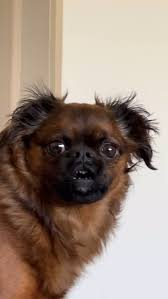 | |
| Artsper | ▷ Pekingese Family of Dogs by Filiberto Vitaliano Rossi, 1939 | Oil Painting for Sale | Artsper | 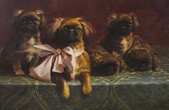 |
| Those are the cutest plushies 😂❤️ Ins: Pisco_cat | ||
| Alix Fuerst | Customer Testimonials | 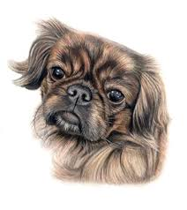 |
| Toast & Burt (& Kevin) (@yay_toastandburt) • Instagram photos and videos | 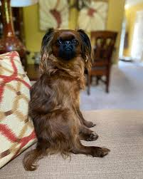 | |
| 1stDibs | Unknown - Antique English Impressionist Signed Dog Portrait Landscape Terrier Oil Painting For Sale at 1stDibs | 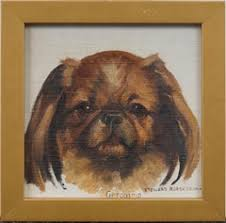 |
| Freepik | Page 80 | Dog puppy shih tzu Images - Free Download on Freepik | |
| mjbest_dog Prompt: Caricature, contour, rendition of Chico, smashed nose broken, protruding front tooth, our ageing pet Pekingese Dog --chaos 10 --ar 4:3 --personalize gs2guqm --stylize 1000 --weird 600 | ||
| MutualArt | Henry Rankin Poore | 44 Artworks at Auction | MutualArt | 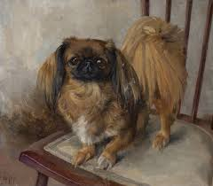 |
| Dogs in cosy blankets design | ||
| Kirby is new to this thread : r/Pekingese | ||
| dogsblog.com | Betsy - 3 year old female Cavalier King Charles Spaniel cross Pug available for adoption | 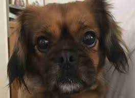 |
| Say hello to Willow the 14 week old pugalier! : r/pugs | 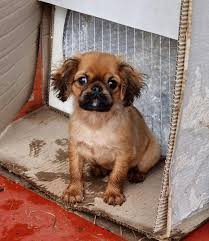 | |
| alicianassifphotography.com | Alicia Frew-Nassif Photography - SEA OF CLOUDS | |
| My first experience painting animals in oil. 14x11 | 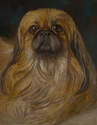 | |
| Fine Art America | Crazy Ferret Greeting Card by Elisabeth Lucas | |
| bffpetcare.co | Best Friends Forever Pet Care Services|Mira Mesa|Dog Boarding|Sitter | 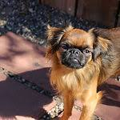 |
| 27 Pekingese paintings ideas to save today | pekingese, pekingese dogs, dogs and more | 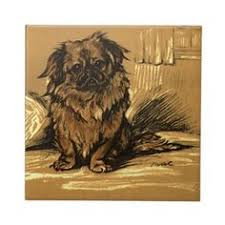 | |
| MutualArt | British School, 20th Century | Apple tree in Summer | MutualArt | 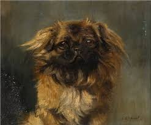 |
| Etsy | Pekingese Dog Print - Etsy | 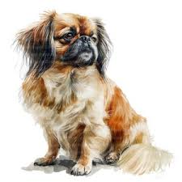 |
| eBay | Postcard All Dressed Up & No Place To Go Pekingese Dogs | eBay | 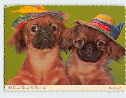 |
| Etsy | Original 1900s Pekingese Artist Signed Illustrated Postcard - Antique Vintage Edwardian Dog Embossed - Etsy | 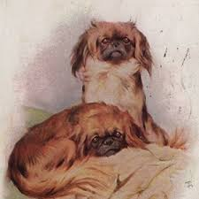 |
| Griffon Dog Breeds Characteristics | 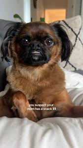 | |
| Vecteezy | Fluffy Pekingese dog with big eyes and charming expression against dark background. This adorable pet showcases its unique features and playful personality 68978332 Stock Photo at Vecteezy | |
| Liverline 2 months Princess type h Female | ||
| 糖糖(torngyuan) - Profile | Pinterest | 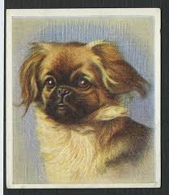 | |
| MutualArt | Renée Estieu | Begging Pekingese | MutualArt | 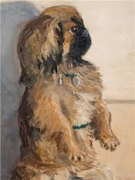 |